AVATAR REVIEW · 173Wardrobe refinements
Connected bikini bottoms, a shorter skirt, fitted pants and revised button-up shirts. The four dark eye shapes are retained.
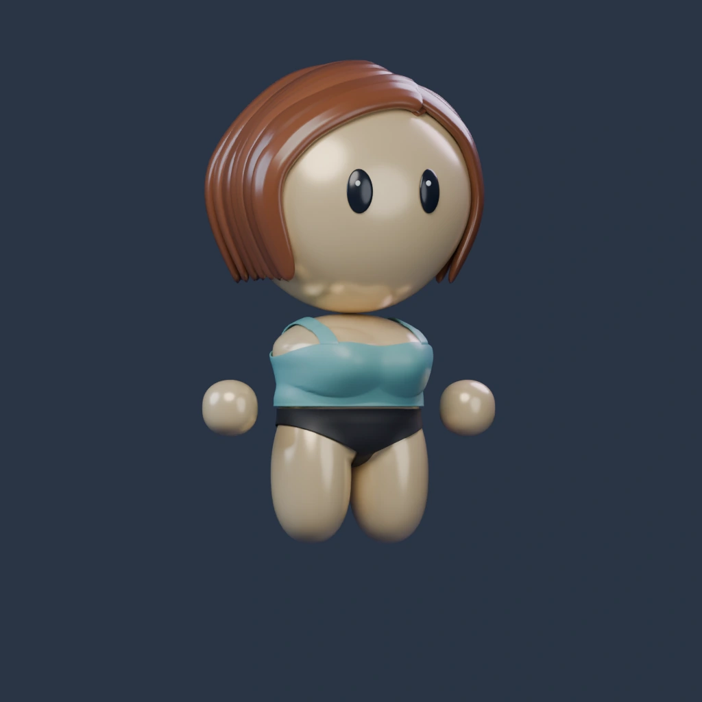
Blender reference · Tank / Black / Light warmLoad 3D to rotate, zoom and mix outfits. Selections are remembered separately for each build.
Lighting, skin colors, head shapes and dark eyes are unchanged. The white-eye experiment is removed. Static bottom images use Tank, Original eyes, Light warm skin and Black fabric. Live 3D shows your selection.
Bottoms
Women: Shorts, Skirt, Bikini bottoms and Pants. Men: Shorts and Pants. Pants replace the flared option.
Feminine
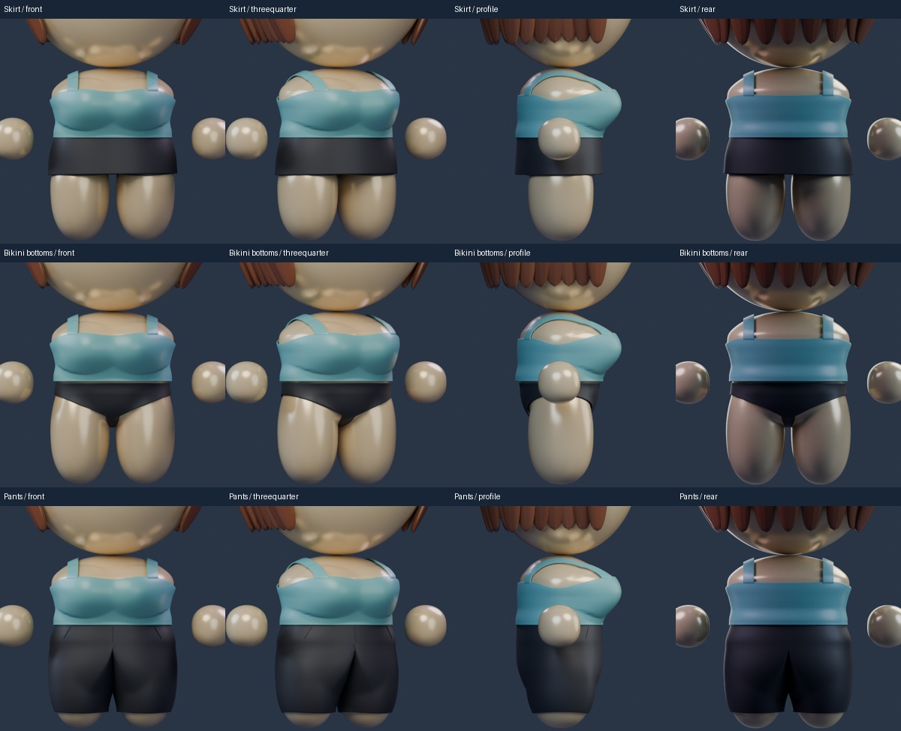
Masculine
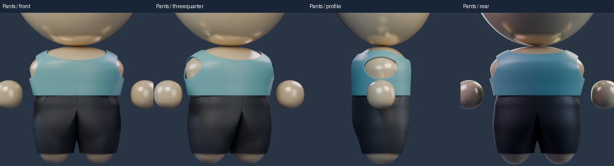
Bikini underside and construction
The front, back and crotch share joined geometry, with separate waist and leg openings. The underside is included in the review.
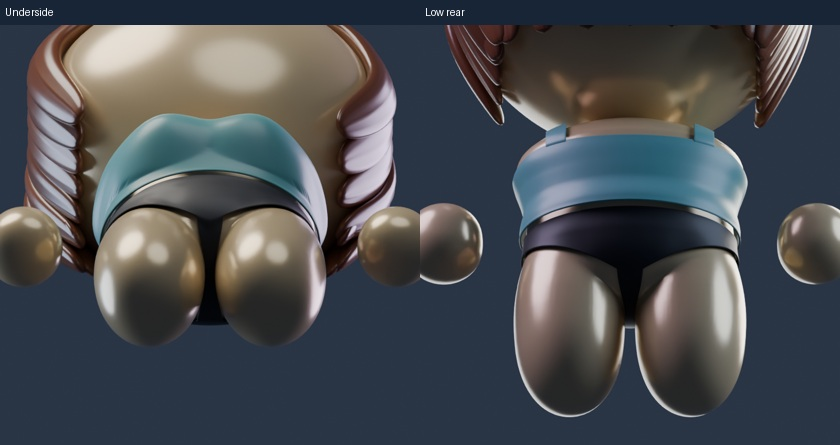
Shirts and cross strap
Connected folded collars. The women’s shirt is buttoned through its lower half, with an open upper front and no inner shirt. The crop’s diagonal band is wider and sits above the fabric.
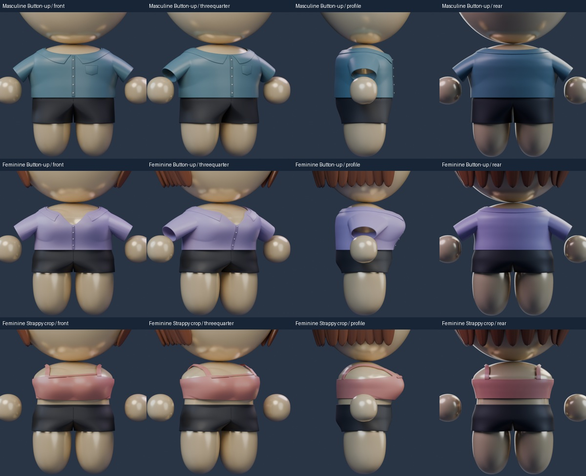
Men’s hair · before and after
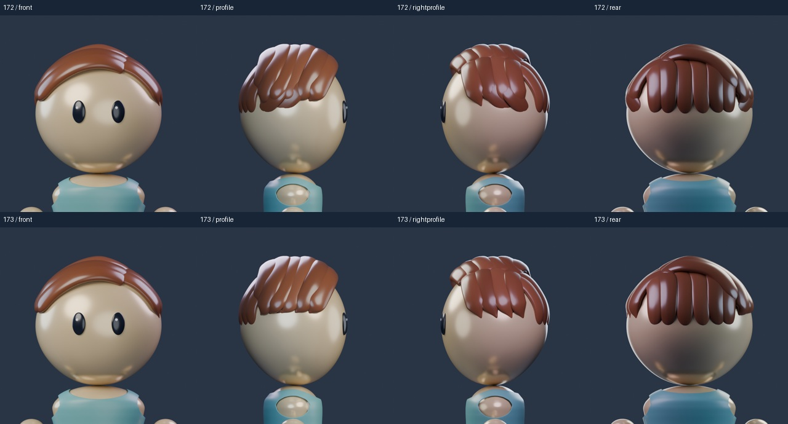
Outfit review
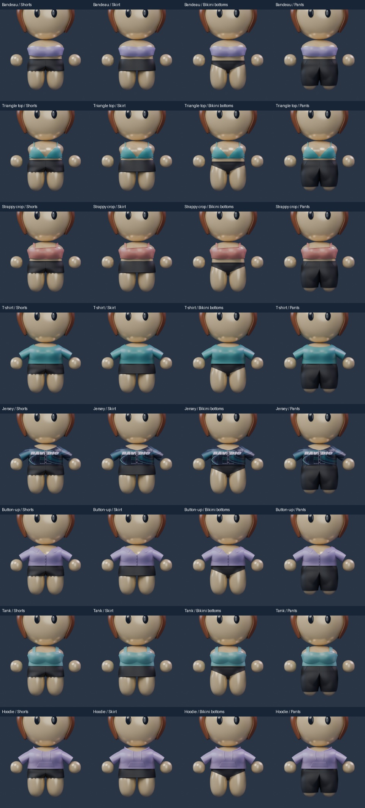
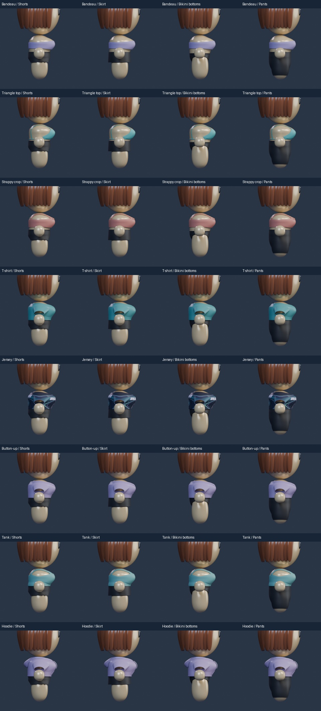
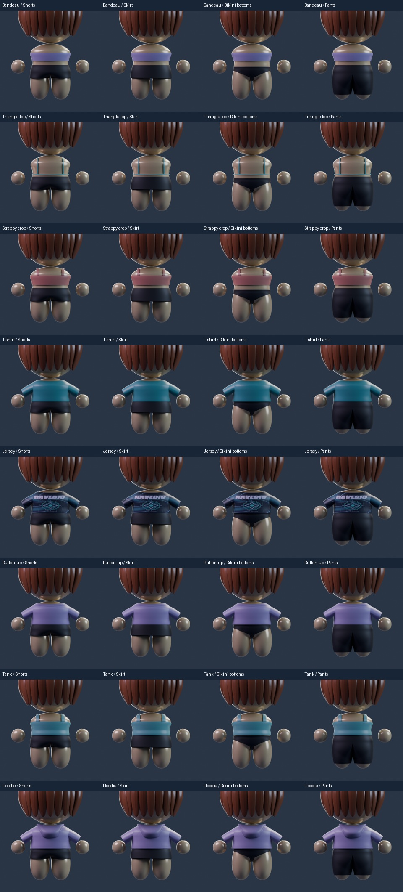
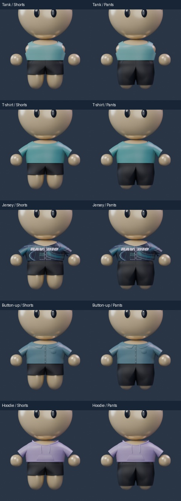
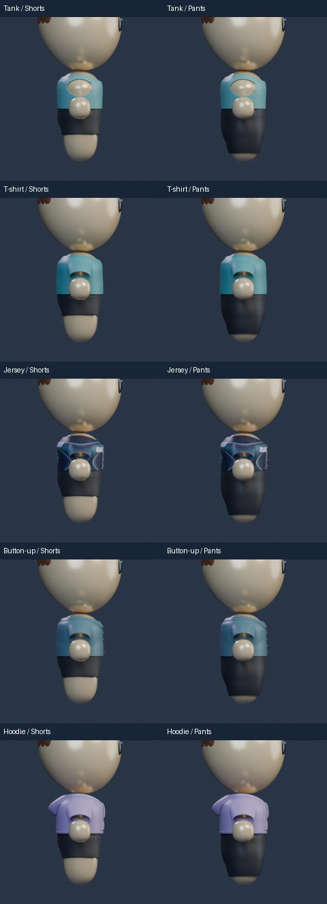
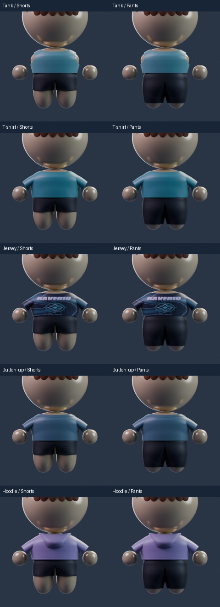
Scope and files
Local cartoon art candidate. Human master, Avatar Studio and firmware/mobile/cloud contracts remain unchanged. Owner acceptance remains separate from self-review.
Construction reference: Megan Nielsen bikini seams and gusset.